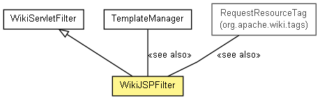

org.apache.wiki.ui
Class WikiJSPFilter
java.lang.Object
 org.apache.wiki.ui.WikiServletFilter
org.apache.wiki.ui.WikiJSPFilter
org.apache.wiki.ui.WikiServletFilter
org.apache.wiki.ui.WikiJSPFilter
- All Implemented Interfaces:
- javax.servlet.Filter
public class WikiJSPFilter
- extends WikiServletFilter

This filter goes through the generated page response prior and
places requested resources at the appropriate inclusion markers.
This is done to let dynamic content (e.g. plugins, editors)
include custom resources, even after the HTML head section is
in fact built. This filter is typically the last filter to execute,
and it must run after servlet or JSP code that performs
redirections or sends error codes (such as access control methods).
Inclusion markers are placed by the IncludeResourcesTag; the
defult content templates (see .../templates/default/commonheader.jsp)
are configured to do this. As an example, a JavaScript resource marker
is added like this:
<wiki:IncludeResources type="script"/>
Any code that requires special resources must register a resource
request with the TemplateManager. For example:
<wiki:RequestResource type="script" path="scripts/custom.js" />
or programmatically,
TemplateManager.addResourceRequest( context, TemplateManager.RESOURCE_SCRIPT, "scripts/customresource.js" );
- See Also:
TemplateManager,
RequestResourceTag
|
Method Summary |
void |
doFilter(javax.servlet.ServletRequest request,
javax.servlet.ServletResponse response,
javax.servlet.FilterChain chain)
Checks that the WikiEngine is running ok, wraps the current
HTTP request, and sets the correct authentication state for the users's
WikiSession. |
protected void |
fireEvent(int type,
String pagename)
Fires a WikiPageEvent of the provided type and page name
to all registered listeners of the current WikiEngine. |
void |
init(javax.servlet.FilterConfig config)
Initializes the WikiServletFilter. |
| Methods inherited from class java.lang.Object |
clone, equals, finalize, getClass, hashCode, notify, notifyAll, toString, wait, wait, wait |
WikiJSPFilter
public WikiJSPFilter()
init
public void init(javax.servlet.FilterConfig config)
throws javax.servlet.ServletException
- Initializes the WikiServletFilter.
- Specified by:
init in interface javax.servlet.Filter- Overrides:
init in class WikiServletFilter
- Parameters:
config - The FilterConfig.
- Throws:
javax.servlet.ServletException - If a WikiEngine cannot be started.
doFilter
public void doFilter(javax.servlet.ServletRequest request,
javax.servlet.ServletResponse response,
javax.servlet.FilterChain chain)
throws javax.servlet.ServletException,
IOException
- Description copied from class:
WikiServletFilter
- Checks that the WikiEngine is running ok, wraps the current
HTTP request, and sets the correct authentication state for the users's
WikiSession. First, the method
AuthenticationManager.login(HttpServletRequest)
executes, which sets the authentication state. Then, the request is wrapped with a
WikiRequestWrapper.
- Specified by:
doFilter in interface javax.servlet.Filter- Overrides:
doFilter in class WikiServletFilter
- Parameters:
request - the current HTTP request objectresponse - the current HTTP response objectchain - The Filter chain passed down.
- Throws:
javax.servlet.ServletException - if AuthenticationManager.login(HttpServletRequest) fails for any reason
IOException - If writing to the servlet response fails.
fireEvent
protected final void fireEvent(int type,
String pagename)
- Fires a WikiPageEvent of the provided type and page name
to all registered listeners of the current WikiEngine.
- Parameters:
type - the event type to be firedpagename - the wiki page name as a String- See Also:
WikiPageEvent
Copyright © {inceptionYear}-2014 The Apache Software Foundation. All rights reserved.